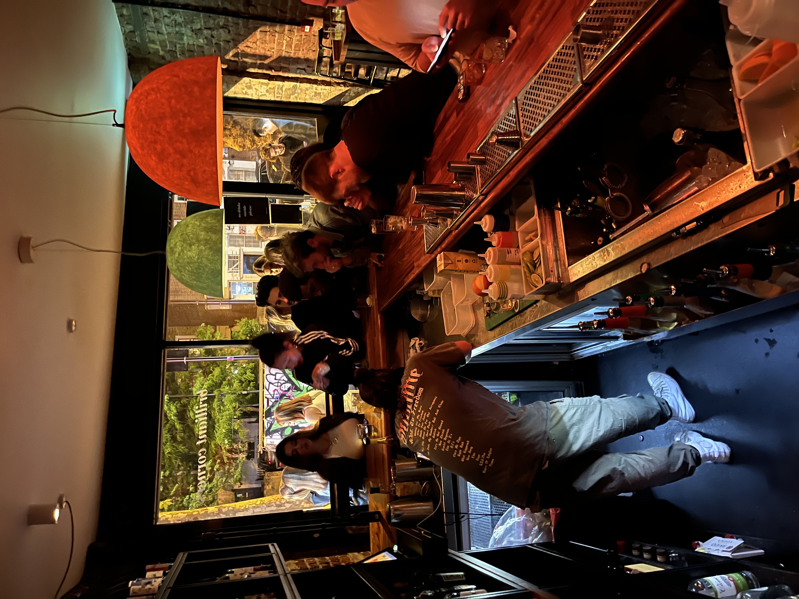
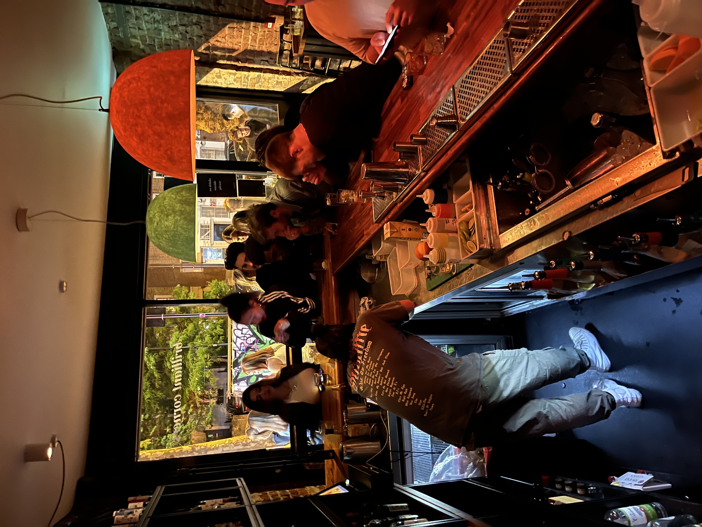

Conversation
Conversation is one of the ultimate forms of anti-computer thinking in my opinion. In my practice I value all the interactions, at least somewhat loosely related to my project, that I have, I believe they can lead to pivotal moments. For example, talking to my tutor about collaboration in my unit 6 project was what led me to think about collaboration as less of something that ‘must’ be done but a playful and unique medium.
I also find examples of important conversations in the bar-work that I do, I have worked in a variety of pubs and bars and often find myself conversing with those at the bar, we’ll talk about many things – nightlife, music, drinks, art and occasionally my own work. What I think is great about these conversations is that the people you interact with offer a completely fresh and alternative perspective to your way of thinking or just new ideas on mediums or concepts to explore, the programme I used for Unit 4 that I mentioned, ‘Pure Data’, was actually suggested to me by a customer as we talked about links between sound design and coding.
For Unit 6 project 1, the brief, inspired by the Derive (a method of urban exploration created by the ‘Situationist International’), was to create a psychogeographic map for a specified area around Knightsbridge area. During this project I had quite a few conversations with people in the bar about London and its areas, how their characteristics differ and how the experiences of the place vary. It was interesting and somewhat humorous to see the way in which people’s perspectives varied. A lot of individuals from outside of the city would expectedly see these areas through a more positive lens, especially with central areas like Knightsbridge when comparing to ‘Londoner’s’ opinions who thought these areas were crammed, congested and ‘unbearable’. As someone who has spent their whole life in London, I relate to the latter opinion more. Like many others, I’m sure, I often get frustrated with the chaotic and erratic movements of the crowds in these spots which led me to look more into the flows of ‘people traffic’ for this project.
Image: photograph I took in the bar I work at, people crowding around the bar talking about the boxing fight that was on that night.